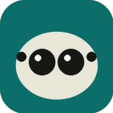

Spood Stacker
A burst of lean-in photos in, one sharp spider out.
Put it in your share menu
- Tap Install app below, or Chrome's ⋮ menu → Add to home screen → Install.
- In Gallery, select a burst, tap Share, choose Spood Stacker.
Tap to choose photos
or share them here from Gallery · 2–30 photos of the same subject
What's this?
Tap the picture to hold a scene, swipe right to look back. Every picture is your own photos, at the step the stacker is on.
Starting
0%
Keep this screen open. Nothing leaves your phone.
Details
Stacking engine: loading…